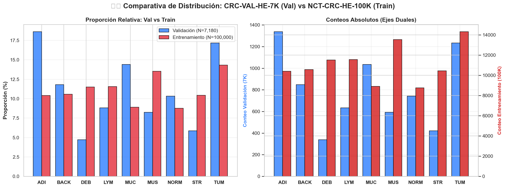
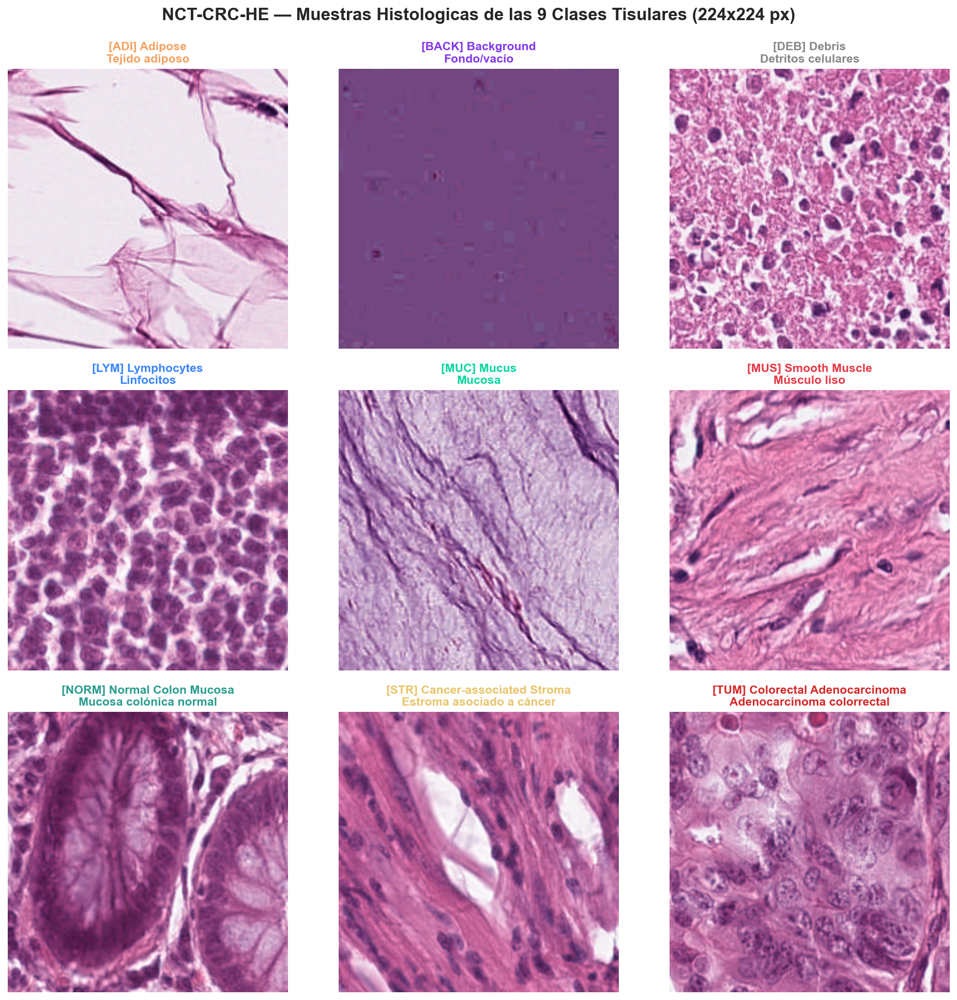
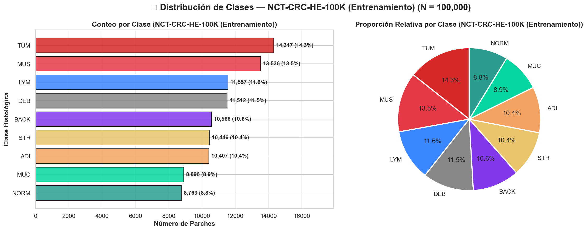
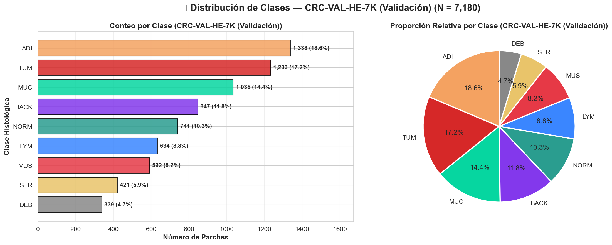

NCT-CRC-HE: Los 9 Ingredientes del Tejido y el Efecto Macenko
Análisis completo de las 107,180 imágenes TIF (224×224 px @ 20x) descargadas localmente (15.19 GB): por qué distinguir linfocitos y estroma evita falsos positivos en MIL, y evidencia empírica de cambio cromático entre centros.
+ 7,180 Val 50 pacientes (0.75 GB)
MUS, NORM, STR y TUM
Mismo FOV que CAMELYON16
142.07 Train vs 111.30 Val
¿Por qué no basta estudiar 'Tumor vs Sano'? Las 9 Piezas del Colon
Si entrenas a alguien para encontrar carne (TUM) mostrándole solo "carne vs plato vacío", cuando aparezca un trozo oscuro de pimienta (LYM = linfocitos) o fibra muscular (MUS) lo confundirá con carne!
NCT-CRC-HE le enseña a nuestra red los 9 ingredientes reales presentes alrededor de todo tumor gastrointestinal y ganglionar.
• Permite evaluar si la compuerta sigmoide \(\sigma(Uh_k^\top)\) silencia limpiamente BACK, ADI y DEB.
• Sirve para construir Pseudo-WSIs multiclase mezclando estroma STR + mucosa NORM + focos TUM con composición exacta conocida!
| Código | Tejido Histológico | Train (100K) | Val (7K / 50 pac.) | Rol para Detección MIL |
|---|---|---|---|---|
| TUM | Adenocarcinoma colorrectal | 14,317 (14.3%) | 1,233 (17.2%) | Clase objetivo maligna (+) |
| MUS | Músculo liso | 13,536 (13.5%) | 592 (8.3%) | Estructuras fibrosas sanas |
| LYM | Linfocitos (células inmunes) | 11,557 (11.6%) | 634 (8.8%) | Confusor clásico (azul denso) |
| DEB | Detritos celulares / necrosis | 11,512 (11.5%) | 339 (4.7%) | Restos no diagnósticos |
| BACK | Fondo / vidrio vacío | 10,566 (10.6%) | 847 (11.8%) | Debe ser silenciado (gate ≈ 0) |
| STR | Estroma asociado a cáncer | 10,446 (10.5%) | 421 (5.9%) | Microentorno peritumoral |
| ADI | Tejido adiposo (grasa) | 10,407 (10.4%) | 1,338 (18.6%) | Celdas blancas gigantes |
| MUC | Mucosa / moco | 8,896 (8.9%) | 1,035 (14.4%) | Textura pálida filamentosa |
| NORM | Mucosa colónica normal | 8,763 (8.8%) | 741 (10.3%) | Control criptas normales |
Flujo de 03_NCT_CRC_EDA.ipynb (y script build_notebook.py sincronizado)
nct_train_distribucion_real.xlsx y nct_val_distribucion_real.xlsx.nct_comparativa_completa.xlsx mide variaciones reales de prevalencia entre hospitales: ej. ADI sube de 10.41% en Train a 18.64% en Val; DEB cae de 11.51% a 4.72%!nct_rgb_stats_por_clase.xlsx revelando un desplazamiento sistemático de brillo global entre splits (efecto Macenko).guardar_subplots, eliminación de emojis □ rotos en títulos y sincronización exacta con scripts/build_notebook.py.
Texturas Histológicas (224×224 @ 20x) y Valores Medidos RGB

nct_rgb_stats)| Clase | Brillo 100K | Brillo Val 7K | Δ |
|---|---|---|---|
| BACK | 142.07 | 111.30 | −30.77 |
| MUS | 173.97 | 159.04 | −14.93 |
| ADI | 207.26 | 215.65 | +8.39 |
| STR | 171.22 | 163.76 | −7.46 |
| TUM | 158.85 | 151.59 | −7.26 |
| LYM | 156.28 | 162.52 | +6.24 |
NCT-CRC-HE-100K aplicó normalización Macenko, pero los 50 pacientes externos de CRC-VAL-HE-7K no pasaron por el mismo tubo de estandarización, simulando exactamente el problema multicéntrico real de hospitales distintos!
Comparativa Visual de Volumen: 100,000 Entrenamiento vs 7,180 Validación


Simulador: Construye una Pseudo-Lámina y Evalúa Normalización de Tinción
Mezclador de Pseudo-Lámina de Colon (K=100 Parches)
Conexión Exacta con Referencias/ y Reuniones Sep–Nov
Usa exactamente nuestros 107,180 parches (CRC, 224×224 @ 20x, 9 clases):
• Linear Eval (Congelado): ResNet-50 ImageNet logra 90.93% vs TCGA SwAV 95.78% y ViT-S DINOp=8 95.29%.
• Fine-Tuning (100% / 1% datos): Con 1% de etiquetas de CRC, DINOp=8 ya alcanza 95.03% (y 97.13% al 100%)!
• Prueba que aumentos de tinción realistas (RandStainNAGMM + flip vertical) evitan deformaciones irreales H&E.
Cita explícitamente Macenko et al. (2009) y StainGAN como ejes de generalización multicéntrica para que los extractores congelados de MIL no aprendan el escáner del laboratorio. Nuestro hallazgo en BACK (−30.77 brillo en Val 7K) demuestra empíricamente exactamente esa advertencia!
En la Fig. 1c de CLAM (pág. 30 del PDF), al reducir con PCA el espacio latente de CAMELYON16, los parches se separan en "Positivo (Tumor)" vs una nube "Agnóstica" (tejido sano, grasa, linfocitos densos). NCT-CRC nos da etiquetas explícitas de todas esas morfologías agnósticas!
En 08 Oct mostramos el colapso de VRAM para 224×224 en WSI reales. En NCT-CRC (224×224) evaluamos primero capas intermedias (25 Sep) sobre 9 texturas puras y luego Gated Attention multi-clase filtrando BACK y DEB como ruido silenciado.
¿Cómo Explotaremos los 15.19 GB Ya Descargados de NCT-CRC-HE?
- Auditar Falsos Positivos por Linfocitos/Estroma: Ver qué atención asigna Gated ABMIL a
LYMySTRdentro de bolsas conTUM. - Ablación Macenko (Train 100K vs Val 7K): Cuantificar cuánto sube la generalización inter-hospital al normalizar tinción vs características crudas.
- Extensión Multi-Clase estilo CLAM: Evaluar ramas de atención paralelas por tipo de tejido (subtipificación morfológica).